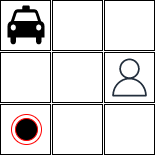
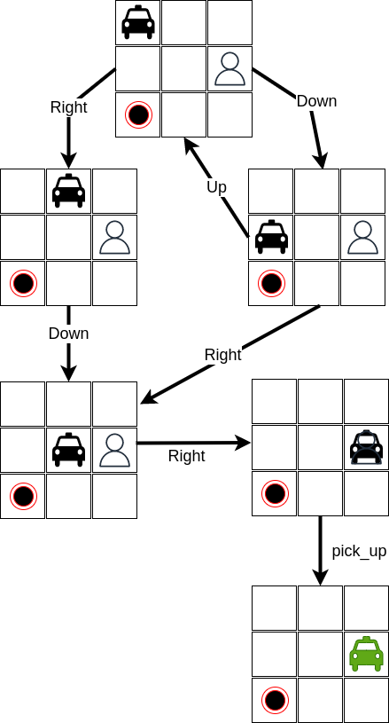
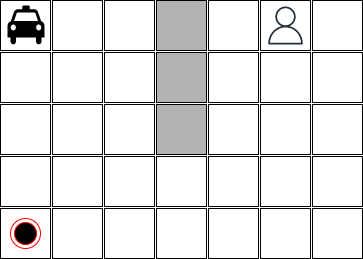
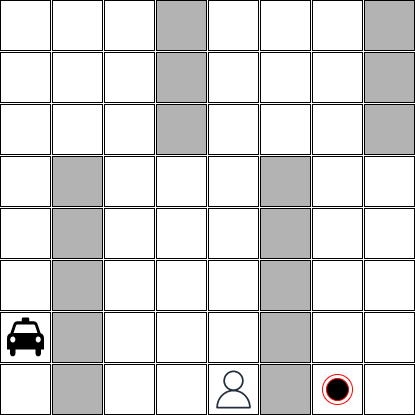

Revisão sobre busca em espaço de estados
A busca em espaço de estados é uma técnica utilizada para encontrar uma solução para um problema através da exploração sistemática de possíveis soluções e eliminando aquelas que não atendem aos requisitos. Ela é utilizada em inteligência artificial para resolver problemas complexos que exigem uma combinação de dados e raciocínio. O objetivo da busca em espaço de estados é encontrar a solução ótima, que é aquela que melhor atende aos critérios desejados.
O processo de busca envolve representar o problema como um espaço de estados, definindo o estado inicial e o estado objetivo, e em seguida, utilizando algoritmos para explorar possíveis soluções, movendo-se de um estado para outro até que o estado objetivo seja alcançado. A escolha do algoritmo depende do problema específico, do tamanho do espaço de estados e da complexidade de tempo e memória desejada para a solução.
Algoritmos
Existem vários tipos de algoritmos utilizados em uma busca em espaço de estados:
-
Algoritmos de Busca Não Informado: estes algoritmos não utilizam nenhuma informação sobre o problema e realizam a busca de forma cega pelo espaço de estados. Exemplos incluem Busca em Largura (BFS), Busca em Profundidade (DFS) e Busca em Profundidade Iterativa.
-
Algoritmos de Busca Informada: estes algoritmos utilizam informações sobre o problema, como heurísticas, para orientar o processo de busca e torná-lo mais eficiente. Exemplos incluem Busca A* e Busca Gananciosa.
-
Algoritmos de Busca por Restrições: estes algoritmos são usados para encontrar estados que satisfazem um conjunto de restrições. Estes algoritmos não retornam uma sequência de ações que fazem com o agente saia do estado inicial e chegue no estado final. Estes algoritmos retornam apenas estados que satisfazem um conjunto de restrições. Eles são frequentemente utilizados em problemas de otimização. Exemplos incluem Subida da Montanha e Algoritmos Genéticos.
Cada um desses algoritmos possui suas próprias vantagens e desvantagens, e a escolha do algoritmo depende do problema específico, do tamanho do espaço de estados e da complexidade de tempo e memória desejada para a solução.
Referências
Algumas referências que podem ser úteis:
Um Agente Taxista sem Aprendizado por Reforço
Neste exercício, você deve implementar um agente taxista que pode pegar um passageiro em um ponto e deixar este passageiro em outro ponto considerando um mapa específico. Um exemplo de mapa é apresentado abaixo:

Este mapa é um mapa muito simples. Este mapa tem apenas 3 colunas e 3 linhas, sem nenhuma barreira. O táxi está na posição [0,0], o passageiro está na posição [1,2] e o passageiro deve ser pego em [2,0].
Nós sabemos que o agente taxista pode executar as seguintes ações:
- go down: o resultado da execução desta ação é mover o táxi para uma linha abaixo;
- go up: o resultado da execução desta ação é mover o táxi para uma linha acima;
- go right: o resultado da execução desta ação é mover o táxi para uma coluna à direita;
- go left: o resultado da execução desta ação é mover o táxi para uma coluna à esquerda;
- pick up passenger: o táxi só pode executar esta ação se estiver na mesma posição que o passageiro e o passageiro não estiver dentro do táxi. Após a execução desta ação, o passageiro estará dentro do táxi;
- leave passenger: o táxi só pode executar esta ação se o passageiro estiver dentro do táxi. O resultado da execução desta ação é deixar o passageiro na mesma posição que o táxi.
Um subconjunto do espaço de estados para este problema pode ser representado da seguinte forma:

Uma possível solução para este problema é:
right; down; right; right; pick_up; down; left; left; leave
Como podemos implementar um software que encontra uma solução ótima para este problema considerando qualquer estado inicial?
Este software deve ser capaz de lidar com diferentes configurações e com diferentes dimensões. Por exemplo, as imagens abaixo mostram diferentes estados iniciais:
Este estado tem barreiras:

Este estado representa uma situação onde o passageiro está dentro do táxi:

Este estado tem um número maior de barreiras:

Antes de começar a implementação
Antes de começar a implementação, você deve responder algumas perguntas:
-
O que é relevante representar em cada estado no mundo? Quais estruturas de dados são boas para representar esses estados? Qual é o significado de cada variável?
-
Como as ações mudam os estados? Como podemos representar essas mudanças?
-
Que algoritmo de busca é bom para resolver este problema? Alguma heurística é necessária?
-
Quais são os limites da sua solução? Esta solução é capaz de resolver qualquer mapa?
Requisitos
-
Cada grupo deve entregar uma implementação, os arquivos de teste usando
pyteste um arquivo README.md que explica como esta implementação funciona. -
A implementação deve receber um arquivo de texto que representa o mapa e retornar uma sequência de ações que leva o táxi do estado inicial ao estado objetivo.
-
O arquivo de teste deve considerar os cenários descritos acima e também os mapas ilustrados abaixo.


Dicas
- Você deve definir a estrutura de dados para representar o estado inicial e o estado objetivo. Use apenas variáveis que são relevantes para resolver este problema. Se você usar atributos desnecessários, isso aumentará o espaço de busca.
- Você deve definir como as ações mudam o estado. Por exemplo, se o táxi está na posição [0,0] e a ação é
go right, o novo estado será [0,1].Evite gerar estados que não são relevantes para a solução - isto também aumentará o espaço de busca. - Inicie a sua implementação com um mapa simples. Depois, você pode aumentar a complexidade do mapa.
- Você pode usar um algoritmo de busca não informado para resolver este problema. No entanto, se você quiser, pode usar um algoritmo de busca informado. Se você escolher um algoritmo de busca informado, você deve definir uma heurística que é admissível e consistente.
- Existem muitas implementações de algoritmos de busca não informados e informados disponíveis na Internet. Tente reutilizar uma delas.
Entrega
- Este exercício deve ser feito por um grupo de no máximo 3 alunos.
- O prazo de entrega é 18/02/2024 às 23:30.
- A entrega deve ser feita através do Github classroom. Este é o link https://classroom.github.com/a/2z7X09GL.